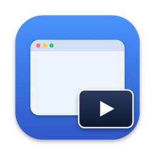

PiP
Picture-in-Picture for any window — right from the menu bar. Mirror a terminal, dashboard, video, or document into a small panel that floats above everything.
Free & open source · Experimental previewbrew install --cask hanbong5938/tap/pip
Everything you need in PiP
Works with any window, not just video players. Captured with ScreenCaptureKit, rendered with Metal.
Any window
Pick from the in-app window list or the macOS system picker and mirror it live in an always-on-top panel, across all Spaces and over full-screen apps.
Multiple PiPs
Open as many panels as you need with ⌘N. Each one mirrors its own window with its own settings, size, and position.
Region capture
Drag directly on the panel to show only the part you need — a chat pane, album art, a single chart.
FPS & opacity
1 / 5 / 15 / 30 / 60 fps and adjustable opacity per PiP. Capture resolution follows the panel size.
Click-through
Toggle with ⌃⌥P from any app so clicks pass through the panels to the windows underneath.
Rotate & resize
Rotate the video in 90° steps, use Small / Medium / Large presets or an exact custom size; aspect ratio stays locked.
Menu bar only
No Dock icon. Hover controls on each panel, a Settings window with launch at login, and defaults for new PiPs.
English & Korean
The UI follows your system language.
Private by design
Frames are processed on-device only. Nothing is saved or sent over the network.
How people use PiP
More than just watching videos.
- 🤖Vibe codingKeep the agent's terminal in view while you do something else.
- 💼MeetingsPin reference docs next to a Zoom or Teams call.
- 📊MonitoringDashboards, logs, and CI status always visible.
- 🎵MusicCrop to just the album art and controls.
- 🎬StreamingAny video in any player, not only supported ones.
Install
Homebrew is the easiest way to install and keep PiP up to date.
🍺 Homebrew Recommended
Available from the personal tap hanbong5938/homebrew-tap.
Install
brew install --cask hanbong5938/tap/pip
Update
brew update && brew upgrade --cask pip
Uninstall
brew uninstall --cask pip
📦 Manual download
- Download
PiP-v<version>-macos-arm64.zipandSHA256SUMS.txtfrom Releases. - Verify the checksum:
shasum -a 256 -c SHA256SUMS.txt - Unzip, move
Pip.appto/Applications, and launch it. - Grant Screen Recording permission when prompted.
System requirements
- Apple Silicon (arm64) Mac
- macOS 15.2 or later
- Screen Recording permission
Known limitations
- If the source app stops rendering while it is on another desktop (Space), the PiP panel freezes too.
- No audio capture; clicks and keystrokes are not forwarded to the source window.
- Launch at login may need approval in System Settings › Login Items.
Privacy
PiP requests Screen Recording permission only to show the window you select in a live panel. Frames are processed in memory on your Mac and are never recorded, saved, uploaded, or shared. There are no analytics, no tracking, and no network requests. Settings are stored locally in UserDefaults.